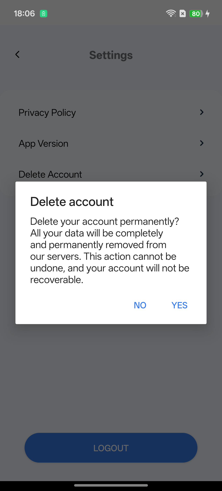

At Credit Calc Online, you have full control over your personal information. If you wish to permanently delete your account and all associated data from our servers, please follow the steps below.
Deleting your account will permanently erase all your data. This action is irreversible—your account cannot be recovered once deleted.

After completing these steps, your data will be securely and completely removed from our systems in accordance with applicable data protection regulations.
If you have any questions or need assistance, please contact our support team at revolvotechpvtltd@gmail.com.